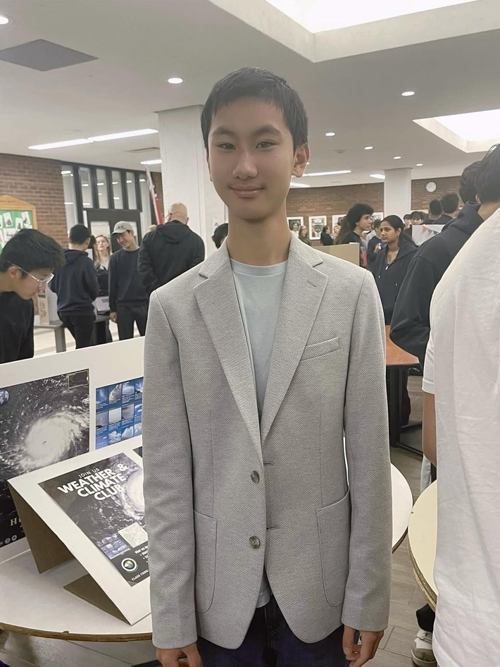
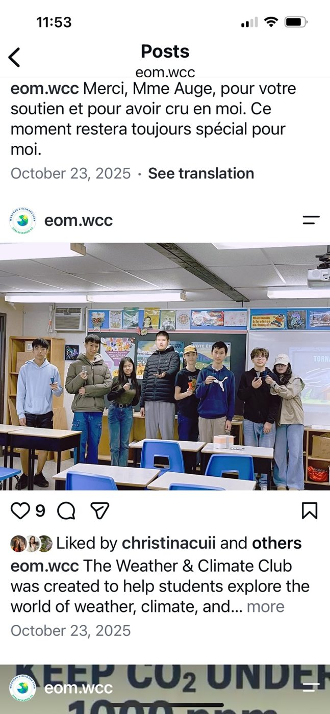
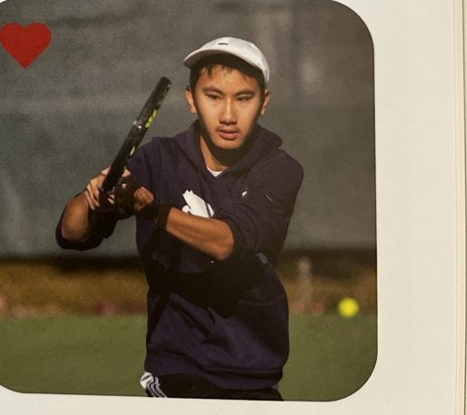
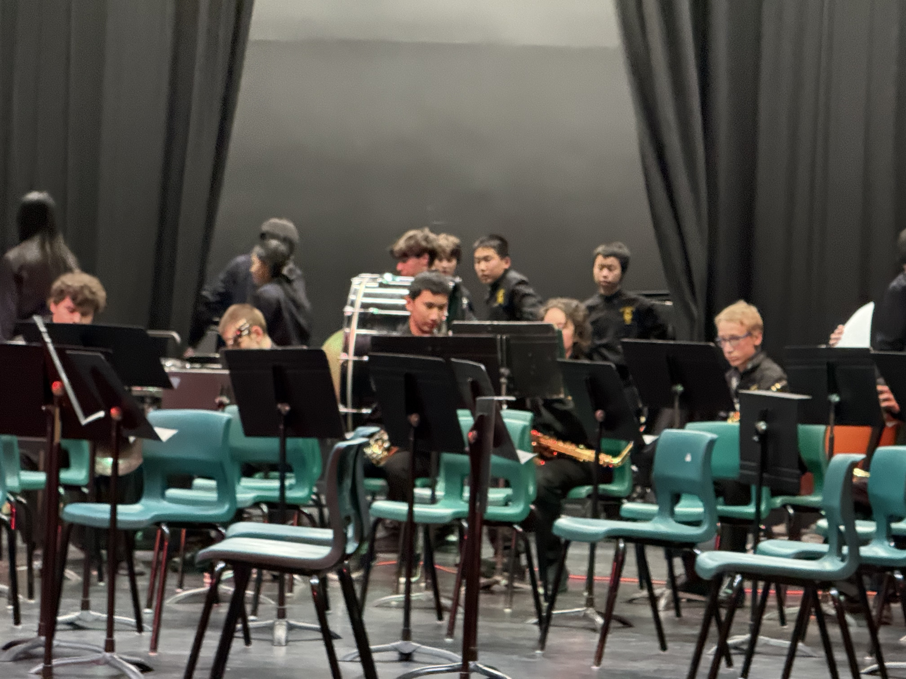
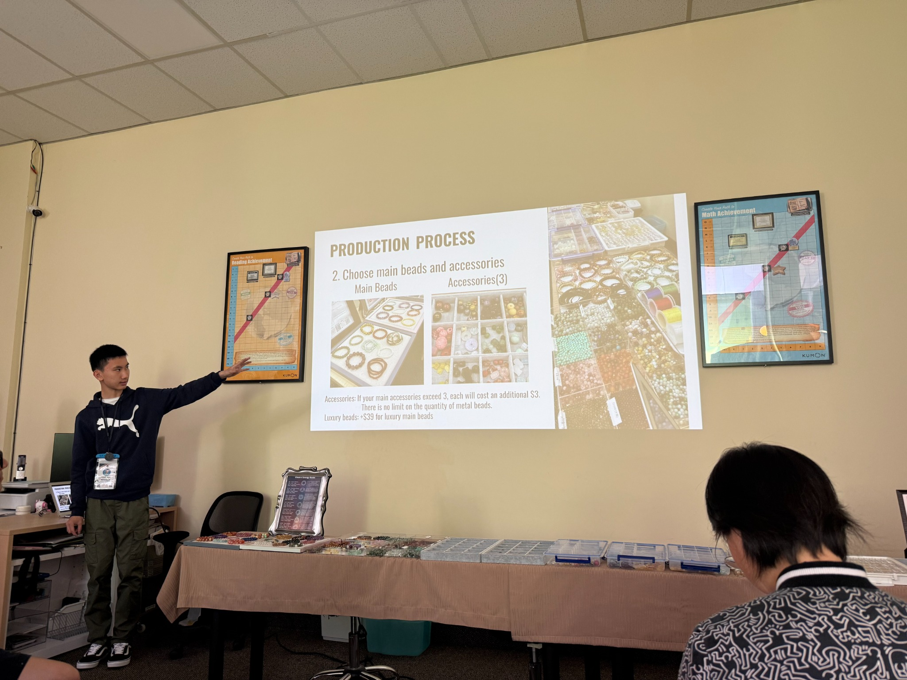
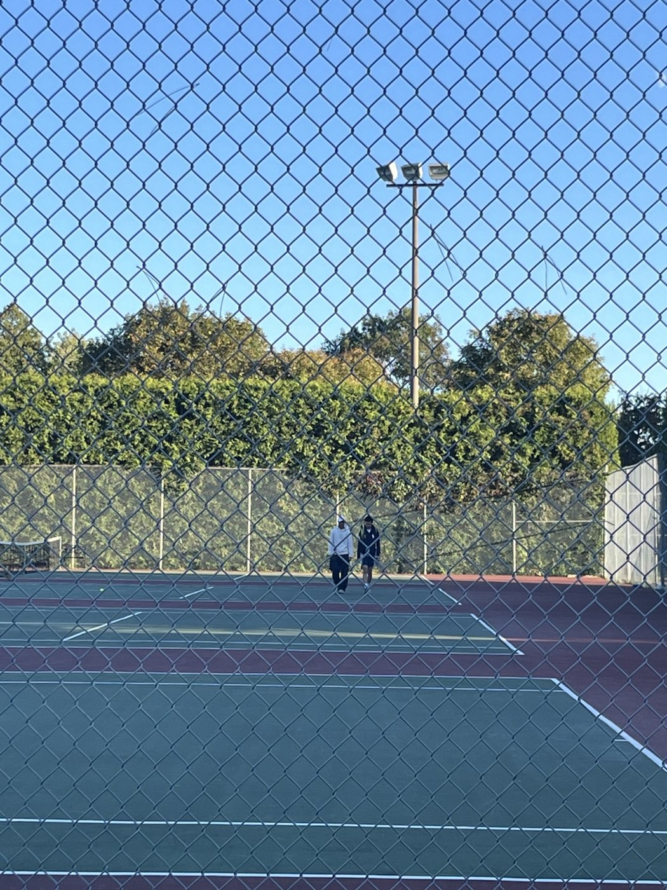
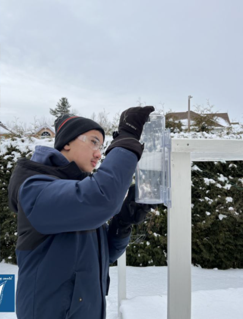
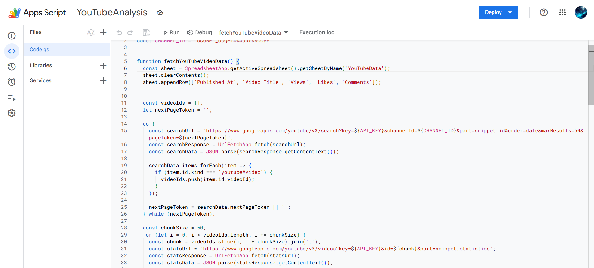
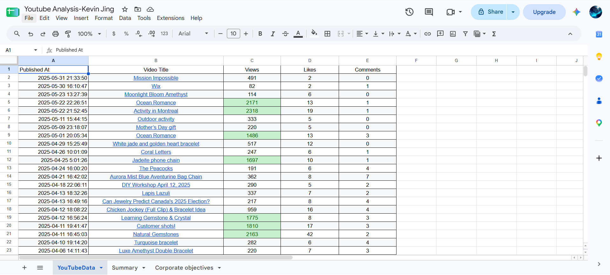

Kevin Jing
Weather, science projects, tennis and music.
View my projects and activities ↓About me
I'm Kevin, a high school student interested in atmospheric science, technology and creative problem-solving. I enjoy exploring how things work, from weather sensors and chemistry games to the strategies behind a tennis match. I also play saxophone in my school band.
Here are some of the projects and experiences that have shaped my interests.

Projects and activities
Science projects, creative teamwork, tennis, music and the people I've met through them.

Weather & Climate Club ↗
A student-led club exploring weather, climate and hands-on demonstrations.

Varsity Tennis ↗
Extra doubles practice, shared strategy and regional finals.

Concert Band ↗
Playing saxophone, rehearsing as a group and performing at Musicfest.

Element Hero ↗
A playable card game inspired by the properties of chemical elements.

Gemistry Studio ↓
Helping run jewelry workshops, creating YouTube videos and automating the team's statistics tracking.
Weather & Climate Club
I started the Weather & Climate Club in Grade 9 because our school had no club focused on weather or climate. I prepared discussions and demonstrations about weather stations, lightning detection and air quality monitoring.
Explore the club story ↗Weather & Climate Club · Group activity

Extra doubles practice · Tennis court
Varsity Tennis
After playing singles in Grade 9, I moved to doubles in Grade 10. My partner and I arranged extra practices to work on our positioning, serves and net play. We eventually reached the regional finals.
Read the tennis story ↗Concert Band
I play saxophone in my school band. Rehearsing together has taught me to listen closely to other sections and keep improving my part. Our band achieved the Gold standard at Capital Region Musicfest and earned an invitation to Nationals.
Element Hero
I created Element Hero, an online chemistry card game inspired by my Grade 6 platinum superhero project. The cards use real properties of elements and compounds, and I shared the game with classmates and teachers.
Explore Element Hero ↗CoCoRaHS Volunteering
In February 2025, I joined CoCoRaHS as a volunteer. The Community Collaborative Rain, Hail and Snow Network brings together volunteers who observe and report precipitation in their communities.
It gave me another way to connect my interest in meteorology with real-world weather observation.
Learn about CoCoRaHS and how to participate ↗
Kevin observing a precipitation gauge · February 2025
Gemistry Studio
At Gemistry Studio, I helped prepare and run jewelry-making workshops while independently managing the team's YouTube channel. The experience brought together hands-on creativity, public speaking and programming.
Workshop preparation and support
Our team took turns preparing bead packets, setting up the space, making samples and preparing presentation content. I introduced activities and helped participants who needed extra support complete their jewelry and take it home. I learned to pay attention to people throughout an activity, even after the introduction was over.
YouTube channel
I independently handled filming, editing, voiceovers, thumbnails, titles and uploads. Taking a video from filming to publication helped me improve my product photography and editing. Preparing samples and helping participants also strengthened my jewelry design skills.
YouTube statistics script
Our team originally tracked YouTube statistics by hand. I wrote a Google Apps Script to collect video information, views, likes and comments into Google Sheets for internal use, helping the team follow its promotional goals. It showed me how programming could improve a real process beyond a school assignment.

